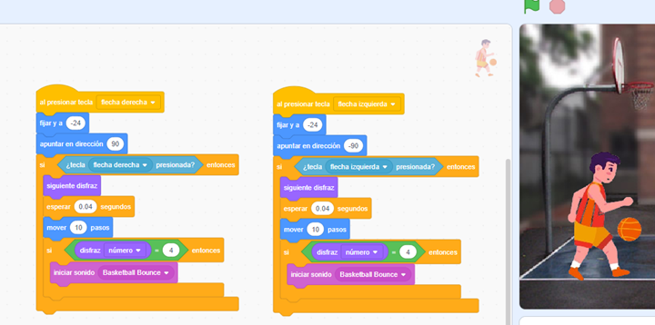
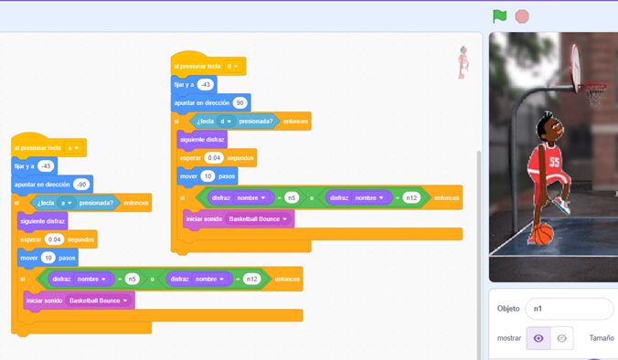

¡Añade Interactividad con Sensores!
Ahora es momento de llevar tu proyecto al siguiente nivel, haciéndolo más dinámico e interactivo. En esta actividad, trabajaremos con bloques de solicitud y respuesta para que los objetos reaccionen a las acciones de los usuarios. Por ejemplo, al presionar una tecla, se ejecutará una acción específica.
¿Qué necesitas incluir?
- Al menos 2 bloques de sensores: Utiliza estos bloques para detectar eventos como teclas presionadas, clics o interacciones del ratón.
- Al menos una acción resultante: Diseña una respuesta visual, sonora o de movimiento que se active cuando los sensores detecten la interacción.
¡Recuerda! Los sensores son herramientas poderosas para crear proyectos más atractivos y dinámicos. Experimenta con diferentes configuraciones y observa cómo las acciones del usuario dan vida a tu proyecto.
¿Estás listo para explorar nuevas posibilidades? ¡Empieza a experimentar y diviértete creando interacciones únicas!
Retroalimentación
En esta parte del proyecto, hemos agregado los bloques solicitados, modificando la acción de los personajes para que ahora se muevan en base a las teclas presionadas en lugar de utilizar la bandera verde. Esto permite que los personajes se muevan de manera independiente, haciendo el proyecto más dinámico e interactivo.

En la ilustración anterior, podemos ver cómo se han configurado los bloques para que uno de los personajes se mueva al presionar las flechas del teclado.

De manera similar, hemos configurado al segundo personaje para que se mueva al presionar las teclas “A” y “D” del teclado, como se observa en la ilustración.
Gracias a esta configuración, hemos logrado que ambos personajes puedan moverse de forma independiente al interactuar con diferentes teclas. Esto agrega una nueva capa de interactividad y control al proyecto.